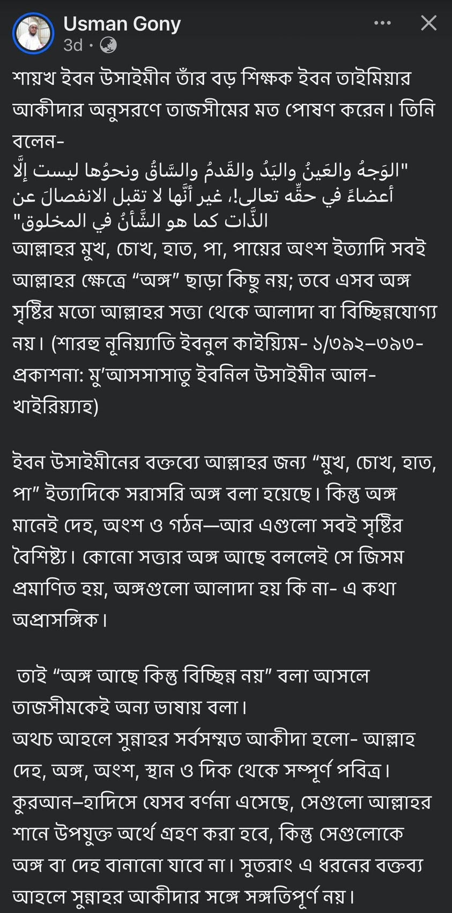
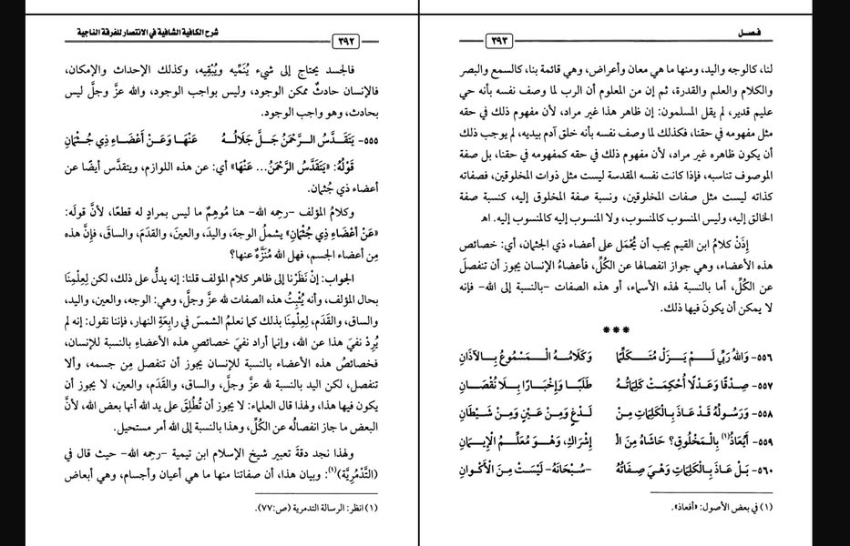

শরহে নুনিয়্যাত - ১/১৯২ ও ১৯৩ নং পেইজ
২০ ডিসেম্বর, ২০২৫
শরহে নুনিয়্যাত - ১/১৯২ ও ১৯৩ নং পেইজ।
শাইখ ইবনু উসাইমিন রাহ-এর নামে মিথ্যাচারের নমুনা দেখুন।
আমি Usman Gony'র এ পোস্ট দেখে তব্দা খেয়ে গেলাম। ইবনু উসাইমিনকে পড়ি হরহামেশাই। কিন্তু এমন কাঁচা কথা তিনি বলতে পারেন বলে বিশ্বাস হল না। তাই ফ্যাক্টচেক করতে কিতাব বের করলাম। তখনই জালিয়াতি স্পষ্ট হয়ে গেল। তার পোস্টে দেয়া বক্তব্য ইবনু উসাইমিনের উক্ত কিতাবে নেই। ইবনু উসাইমিন কিংবা ইবনু তাইমিয়া'র কোনো কিতাবেই এমন কথা পাওয়া অসম্ভব। ধোঁকাবাজ লোকটা বিশ্বস্ততার অর্জন করতে প্রকাশনার নামও যুক্ত করেছে এ প্রতারকগুলো ইমামদের বক্তব্য নিজের মতো সাজিয়ে জালিয়াতির আশ্রয়ে জাতিকে বিভ্রান্ত করে।
মিথ্যাচার আর জালিয়াতি না-করলে বেদআতি আকাইদের মার্কেট ধরে রাখা অসম্ভব। ফলে বেদআতিদের জন্য মিথ্যাচার ও জালিয়াতির গুণ অপরিহার্য।
কিতাবের স্ক্রিনশট যুক্ত করে দিলাম, যাচাই করে নেন।

